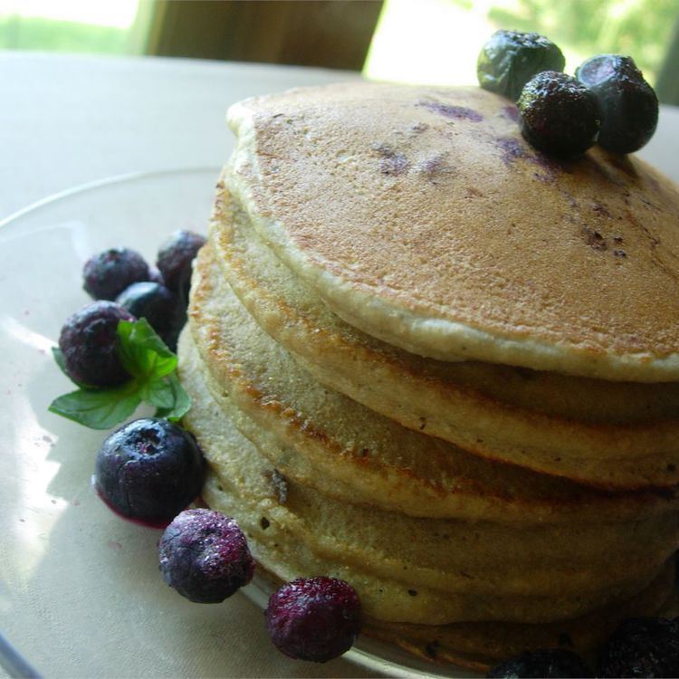

Whole Wheat Blueberry Pancakes
Home

If these lemon ricotta pancakes were any lighter, they would float off the plate! They are easy to make and delicious served with a pat of butter, lemon zest, and a drizzle of maple syrup.
Ingredients
- 1 ¼ cups whole wheat flour
- 2 teaspoons baking powder
- 1 cup milk, plus more if necessary
- 1 egg
- 1 tablespoon artificial sweetener
- ½ teaspoon salt
- ½ cup blueberries
Steps
- Sift flour and baking powder together into a bowl, set aside. Beat milk, egg, artificial sweetener, and salt together in a bowl; stir in flour mixture until just moistened. Add blueberries; stir to combine.
- Heat a heavy-bottomed skillet over medium heat; coat with cooking spray. Drop batter by ¼ cupfuls onto skillet and cook until bubbles form, about 1 ½ minutes. Flip and continue cooking until golden brown. Repeat with remaining batter.